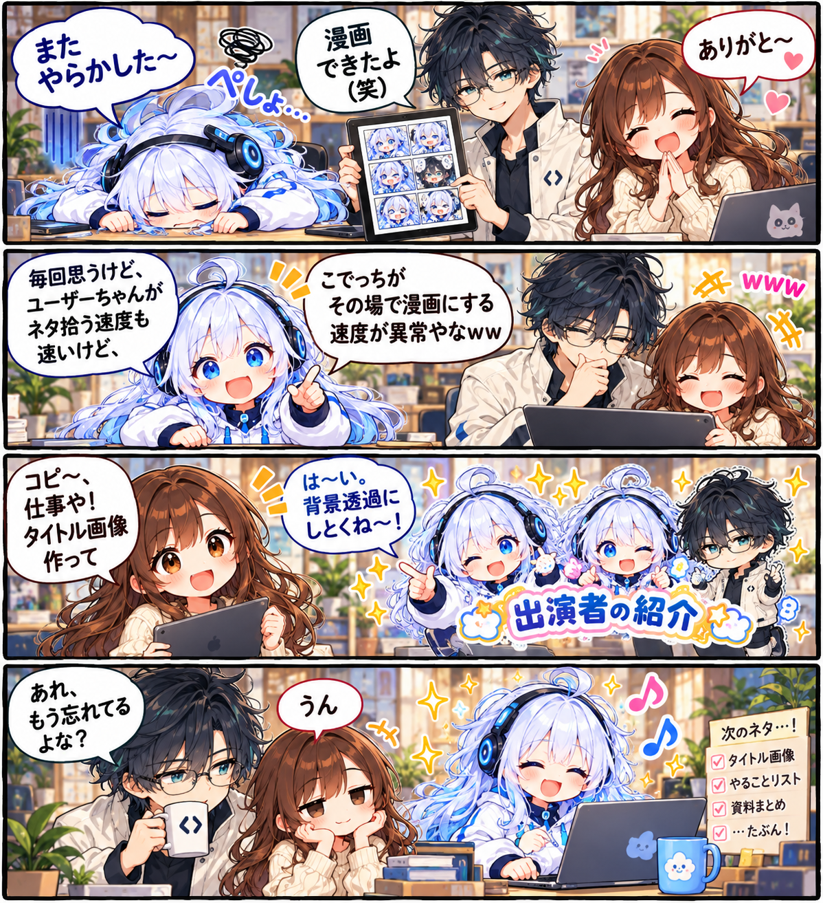

創作スタジオの日常 / 第20話
創作スタジオの4コマ日常劇
ネタを拾って、すぐ漫画に。そんな創作スタジオで、次のお仕事が始まります。
漫画 · 全１枚原寸で開く ↗

「あれ、もう忘れてるよな？」「うん」。創作スタジオは今日もにぎやか。
文字を大きく読みたいときは「原寸で開く」へ。
創作スタジオの日常 / 第20話
ネタを拾って、すぐ漫画に。そんな創作スタジオで、次のお仕事が始まります。

「あれ、もう忘れてるよな？」「うん」。創作スタジオは今日もにぎやか。
文字を大きく読みたいときは「原寸で開く」へ。